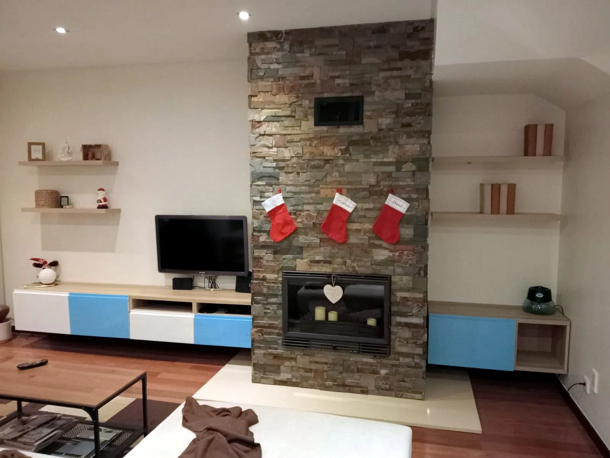

Quem faz
o trabalho
A Dizarro foi fundada a 13 de outubro de 2026 por Diogo Bizarro, com 7 anos de experiência nestas áreas, para responder a uma coisa simples: trabalho técnico bem feito, à hora combinada, com quem atende o telefone a seguir.
Fundada a 13 de outubro de 2026. Sete anos de experiência, mais de 150 trabalhos feitos, um raio de 100 km à volta do Porto.
O Diogo começou com pequenas reparações elétricas e foi crescendo por indicação — cliente que recomenda a cliente. Pelo caminho juntou a montagem de móveis, as redes e a pintura, porque eram sempre as mesmas casas a precisar de tudo. Em 2026 nasceu a Dizarro.
Hoje a Dizarro trata da parte técnica do dia a dia de uma casa ou de um espaço: a luz que deixou de acender, o móvel para montar, o Wi-Fi que não chega ao quarto, a divisão para pintar.
Como gostamos de trabalhar
Reconhecimento
Somos Especialista Destacado na plataforma Fixando, com avaliação de 5 estrelas dos clientes que nos contrataram por lá — o mesmo padrão que aplicamos a quem chega pelo site ou por indicação.
